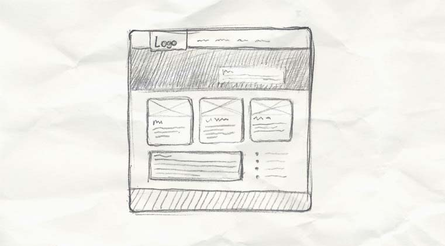
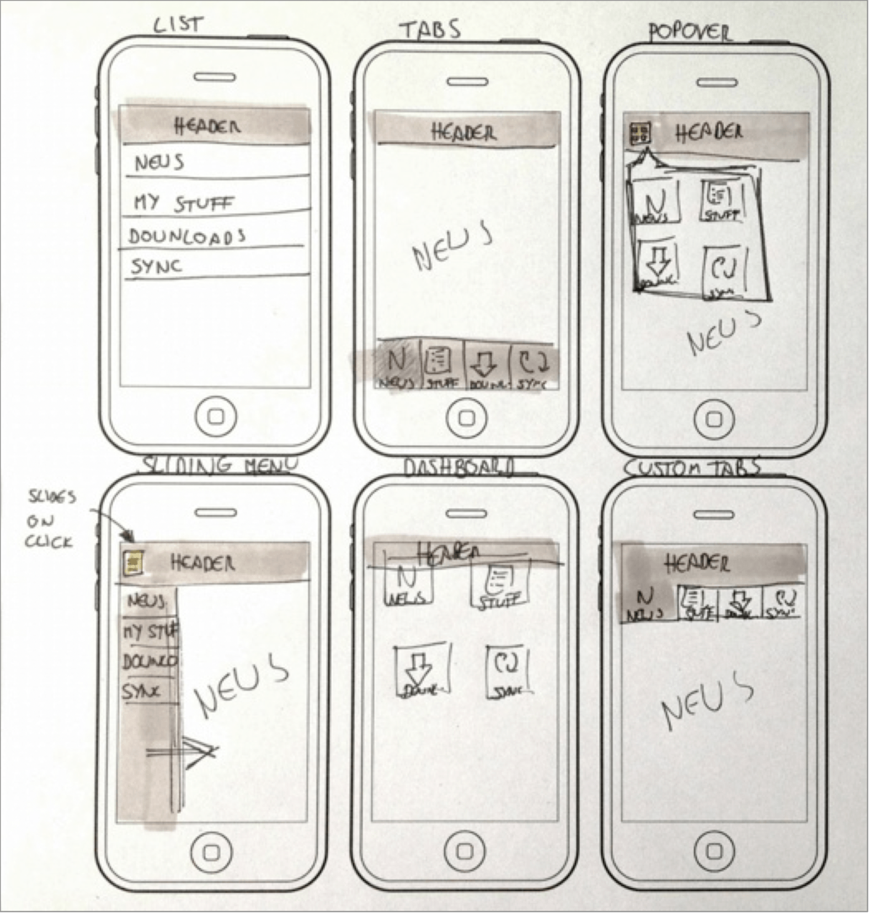
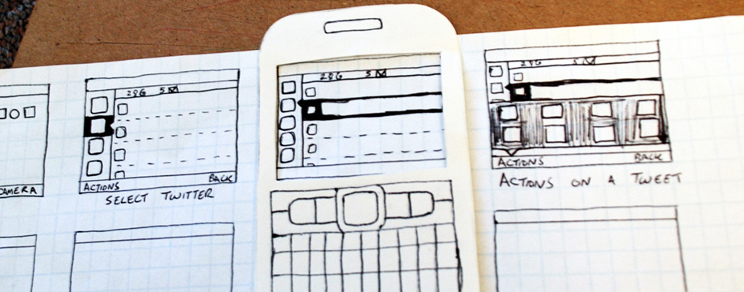
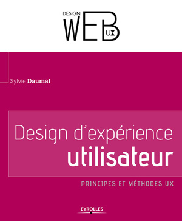
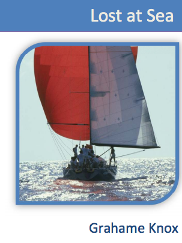
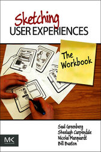
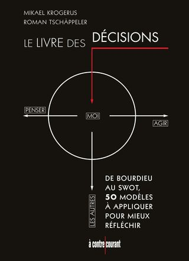

Let's sketch together

Qui je suis ?
Alvin Berthelot
Expert technique Web / Mobile / Java EE ... mais pas que.
“ Sketch ”
Kézako ?
“ Dessin exécuté sommairement, qui n'a pas pour intention d'être considéré comme un travail fini, mais comme une phase exploratoire faisant émerger l'essentiel en omettant les détails. ”
Pas un travail fini !
Quel est l'intérêt ?
Un aspect visuel comme vecteur de communication
Source : Responsive Web Design Process
Une idéation plus spontanée et prolifique
Source : Smashing Magazine
Une sélection très rapide des idées
“ Together ”
Pourquoi ?
“ Les utilisateurs ou leurs représentants et les développeurs doivent travailler ensemble quotidiennement tout au long du projet. ”
“ La méthode la plus simple et la plus efficace pour transmettre de l'information à l'équipe de développement et à l'intérieur de celle-ci est le dialogue en face à face. ”
Communication la plus directe
Un groupe de personnes est plus intelligent collectivement que son membre le plus brillant
La pluridisciplinarité va faciliter la cohérence
“ Let's ”
Comment ?
Déroulement de l'atelier
- Former des équipes (profils hétérogènes) - 6 min
- Exposer une problématique fonctionnelle - 12 min
- Phase d'idéation personnelle - 6 min
- Tour de table : "pitchs" individuels - 12 min
- Phase d'idéation collective - 24 min
- "Pitch" collectif - 12 min
1. Former des équipes
6 min - Go !
2. Exposer une problématique fonctionnelle
12 min - Go !
3. Phase d'idéation personnelle
6 min - Go !
4. Tour de table : "pitchs" individuels
12 min - Go !
5. Phase d'idéation collective
24 min - Go !
6. "Pitch" collectif
12 min - Go !
Inspirations
Design d'expérience utilisateur
Description de l'atelier Six-to-one
Serious game "Lost at sea"
Déroulement de la phase de réflexion individuelle, puis collective
Sketching user experiences (the workbook)
Une multitude d'idées sur les ateliers de "sketching"
Le livre des décisions
Description de la démarche appréciative
Debrieffing
Avec une variante de la démarche appréciative, méthode développée par David Cooperrider
Debrieffing
ATTENTION
C'est la démarche proposée qui est analysée, pas le déroulement de l'atelier
3 min - Go !
Pourquoi présenter cet atelier ?
- Partager la vision, un objectif commun
- Remonter les risques très tôt dans le projet
- Faire émerger des solutions collectives non conventionnelles et en rupture avec les standards
- Produire un livrable efficient Vs perdre du temps à décliner X pages sous Photoshop
MERCI
Présentation disponible sous GitHub :
https://github.com/alvinberthelot/letssketchtogether
Suite à vos retours, elle va surement évoluer